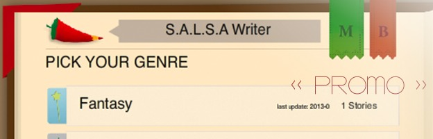

S.A.L.S.A Writer
What could be more fun than writing a story together with your friends? Well, writing an endless, collaborative Choose-Your-Own-Adventure story is. S.A.L.S.A Writer is meant to be just that. It's being developed as an iPad app and as a website, and allows users to contribute to choice-based, branching stories created by other users (or to create their own stories). You can think of it as a combination forum/novel/RPG/application.
The app demo will be released as soon as the User System is up and running, and the website will come once interest in the project has grown. There are a lot of features we plan to implement in the future like a points/rating system, user profiles, and private stories to name a few.
This app was a group project worked on by a number of my classmates and I, and runs on ActionScript 3 and, of course, uses some PHP/MySQL to process database requests.